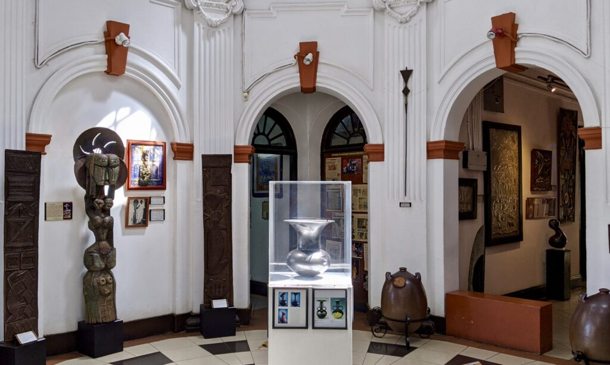

Welcome to Nairobi
The photography exhibition in Nairobi showcases the works of both local and international photographers, featuring a range of styles and subjects. This exhibition offers a platform for emerging photographers to share their talents and unique perspectives on contemporary African photography. Visitors can experience the vibrant and diverse photography scene in Nairobi and explore the city's cultural identity through this exhibition.